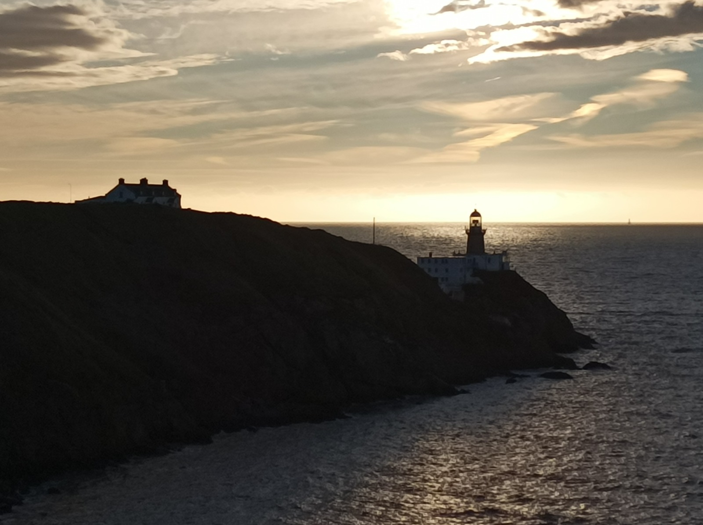
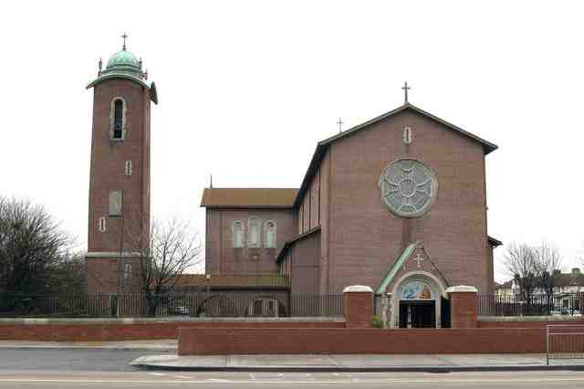
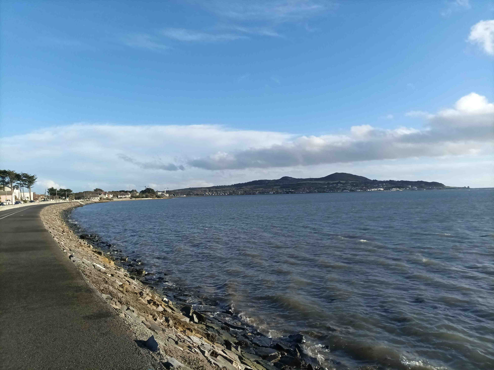
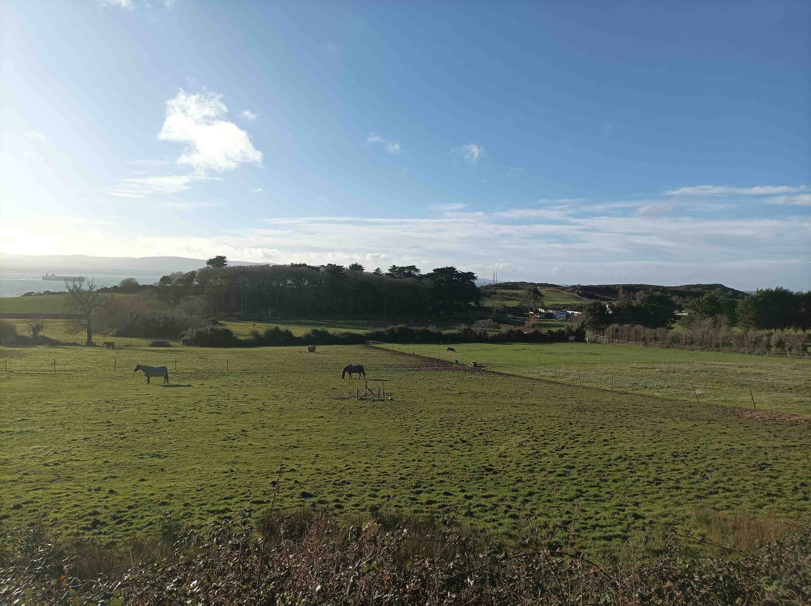
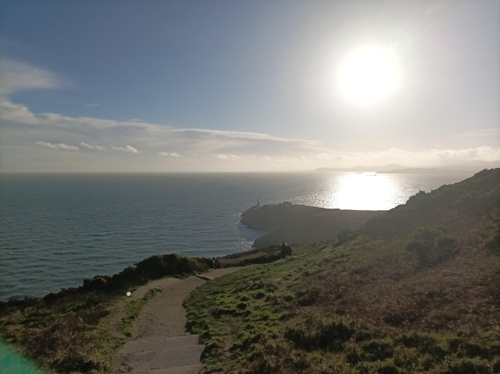

5 Howth

1048 Saturday Jan 7, 2023
I got some news yesterday and it split my soul in two, with one part being normal me and the other part being a freaked-out variant who has been taking over intermittently. On top of that, I can feel a bout of emptiness being triggered, more noticeable than ever before, and I know I need to take action. It’s time to get on my bike and give myself a purpose. I don’t get depressed and sit in bed all day but everything becomes dull and worthless. I can’t just sit here and play lego with my son because I can’t stop thinking how pointless it all is. If I stay at home, I need to do functional stuff like cleaning up or rearranging furniture, although I’ll still have a meltdown by about 11 o’clock, which is now. If I go out, it has to be to somewhere. I always need a purpose. A walk to the shops to get bread will pick me up. I’ve decided I am going to finally cycle out to Howth Head today. I took my son there a couple of months ago and had a glorious morning of it. I was supposed to be cycling there on my Tobler, but my bike prep routine woke him up and I realised he wasn’t going back to sleep. So I lobbed him in the car, turned the L into a W, parked up at the summit and we walked down to the Baily Lighthouse as the sun was rising. So if you are sitting there wondering about the position of the sun at particular times of year – which I increasingly am myself – then that’s why the picture above looks the way it does.
Another problem is that my purpose has to keep changing. I can’t just cycle to the same destination every time I go out. I hate all training. I couldn’t sit on an exercise bike or lift weights in a gym or swim lengths of a pool. Jogging is hell but running after a football is heaven. I played so much sport growing up. Rugby and cricket at the highest available levels. But I couldn’t commit to it from the age of seventeen. All that training seemed like such a loadamebollocks, as did all the jobs my friends were aiming for. I wanted to become a writer, like George Orwell, and write about how shite everything was; and I knew, from Samuel Beckett, that my career could last until my eighties, unlike with sport. But I didn’t know how to do it and I got lost. I was too scarlet to even tell people I wanted to be a writer.
5.1 Roads not taken
I was reminded of my decision last week when I bumped into Kevin O’Brien in the playground in Sandymount. He’s dunzo now. Ireland’s most capped cricketer, out of contract, not selected for the World Cup a couple of months ago. Thirty-eight years old. Unemployed. Kids to feed. I remember that feeling well. In my mid-thirties, looking for a hashtag real job after I finished up my PhD slash vow of poverty. But I can’t imagine how tough it’ll be for him, scouring the world for a cricketing job or else having to start afresh in a whole new proverbial field. We played with and against each other as teenagers, between Ireland, Leinster and our respective clubs. Kev and William Porterfield were in my cohort. The first Irish kids to make a career from cricket. Meanwhile, I chose the long and easy road, stopping in every Battle Cruiser on the way. Seeing Kev has reminded me of the sporting life I never tried to pursue and thus I’m reminded of the writing life I was supposed to pursue. In reality, I’ve filled my life with adjacent interests. Research on English spelling. Teaching English for pocket money. Building Siri for Apple for a salary. But the clock is ticking and I gotta write something. What you’re reading is all I’ve got. And even if it is shite, then at least I gave it shot.
So anyway, I’m in the kitchen, cleaning up after breakfast, and I can feel the emptiness. We’ve no plan for the day and I can feel the nothingness come at me as it often does on a Saturday. But I know too that the issues from yesterday are triggering the trauma of going to boarding school when I was eight years old, so I get the idea of putting on some songs from that era, because there are so few details that I can remember properly, but the songs remain the same. First I stick on Glory Box by Portishead, released in 1994, but my memories are actually from my early secondary school days, and then I lash on It’s my life by Dr Alban, which was my favourite song in the autumn of 1992, and immediately I’m in tears. I’m only nine and I’m back home in my folks’ gaff, and it’s time to go back to school, cos it’s Sunday evening. Atlantic 252 have announced they are going to play the song any minute and I’m waiting and waiting cos I want to tape it and then I’ll be able to listen to it all week on my walkman. But we have to leave during the song and the music is gone. And then so are my family.
5.2 Circular North Road

The Church of the Holy Child, Whitehall was ‘designed to accommodate a congregation of 1750 [people]’.
I go up for a shower and afterwards I declare the need to go for a cycle to help me process stuff. My wife and son are up for going to Go Kids Go nearby so I drop them there. It’s less than a kilometre away but that’s a massive yomp for her because the bambino is due on like Valentine’s Day. Then I’m away on off at last out towards Howth. The cleanest and nicest route would be to take the canal into basically town and then jump on the cycle lane all the way up the coast from Fairview but I’m in the humour for piecing together more of the Northside, so I loop around the Abbotstown quadrant towards Finglas and then hop onto the ringroad that pieces together the innerouter Northside all the way from Finglas Village to what turns out to be Killester. The road starts out life as Glasnevin Avenue and then it’s Collins Avenue, but it’s basically a North Circular Road, part deux, albeit low on embassies and high on gigantor churches. Everywhere in the real Northside seems to be a road, not a place, much like Belfast. The road is wall-to-wall traffic lights and junctions and I wouldn’t recommend it unless your goal is cartography or transit. A cop car keeps pulling up beside me and making me paro off me head. The road is lined with houses and gardens so you still feel like there is some life around even though you never feel you are in a village. Just a few units in a cluster now and again. It’s not like the walled off estates in Blanch or New Lucan where you could pass through and barely see a single person among twenty or fifty thousand inhabitants. Every so often a church emerges, the size of a football pitch, yet they look like placeholder prefabs, made of cardboard, and erected to ensure the newly housed residents could get mass while the real church was being built. Even the names are grandiosely Catholic, plucked from a game of Vatican Bingo. We’re talking Holy Child Roman Catholic Church, Whitehall, which was ‘designed to accommodate a congregation of 1750’. We’re talking, Our Lady of Consolation, Malahide Road.
5.3 Maternal routes
After the Malahide Road things get more familiar. My mam’s relatives are from around here. Killester, Marino, Raheny, although I certainly couldn’t draw you a map because I was always driven here. I see from a shopfront that I’m actually in Killester, and I feel a warm memory of my mam’s Uncle Jack. I’m very young and he’s in his rocking chair, making an imaginary mouse run up his arm. The whole extended family used to have big card games a few times a year, with all the men in one room, smoking cigars and playing Poker, and all the women and children in the other room playing Newmarket, whose rulesI can’t remember. My mam was the only woman in the poker room. The older generation all died out, including my grandmother who was a widow for fifty-seven years. Her husband, Desmond Brennan, had died in in 1948. He was a footballer for the Dubs and an accountant and a boozer, and he was only thirty-seven when he died. All four digits on the shared gravestone were different. 1.9.4.8 and 2.0.0.5. I can’t imagine the loneliness for my Nana after he died. The kids were four, six, eight and ten, and my mam was off to boarding school in Longford a year later, aged seven, a double trauma that I’m only beginning to understand and read up about now myself. My son is approaching that age and it’s making me explore my own past too and my family’s. You can still see my mam get triggered by frozen memories, or even by imaginary fantasy-memories, like when she sees Drico on the telly and she imagines her dad and his grandad on the piss together in Clontarf which apparently they would have been. My mam still treasures her father’s medals because that’s all that survived him. He is somewhere in this video, playing in the 1934 All-Ireland Final, which Dublin lost to Galway.
After my granny died, Uncle Jack emigrated to Australia, aged eighty-nine and three-quarters, to be with his daughter. The Star did a piece on him as Ireland’s oldest emigrant. He was a lifelong swimmer well into his eighties and he must have been a great role model to her just as she has been to me, fending off age with exercise. Jack died ten years later, a week shy of his 100th birthday. I’ve often thought of putting a few bob on my mam to live to 100, just as Shane McGowan allegedly bet on himself to live to 50, then used the cash as a cheeky windfall. The older generation are all gone now and I don’t know if any of my generation are in contact with each other, but my mam and her cousins still meet for dinner a few times a year and it’s nice that they stick together. It’s a reminder to make sure that we keep up the full-size family occasions, with my five sisters and our fourteen kids (plus one in the oven).
5.4 St Anne’s Park
I’ve been trying to make my way north, and to the sea, so that I can follow the coast road to Howth, but I’m still a bit lost. It’s like trying to navigate life using childhood memories, although perhaps that’s a good explanation of adulthood. I end up at yet another church, which turns out to be St Brigid’s Church in Killester, from the 1920s, with a more Irish name. I give in and look at Google Maps and realise I’m beside St Anne’s Park, which I’ve been studiously avoiding on my trips to Clontarf, cos I have cold but indistinct memories of the place. I weave through and there’s a pop-up market on with loadsa burgers and organic vegetables. A mother is on a bike asking her son if he wants to buy kale so that they can make crippies. There’s wide open spaces and the kids have no trouble making use of them but the adults are crouch-standing in huddles to eat their food cos there’s nowhere for them to sit and eat and chill. Basic recreation is something that just doesn’t seem to be understood in this country. Please just stick a few seats down so we can all enjoy ourselves. Picnic benches. Fold-up seats. Anything. It’s doesn’t have to be a beanbagged chill-out space run by fans of The Orb, with lashins of herbal tea on the go, although I’m not gonna pass on the chance to advocate that.
Meanwhile, my infamous mudguard is giving me trouble again and I’m amazed to find out that there’s a bike repair spot here. The lads are sound and the son tightens it back with two teeny bolts and I feel brand new. There’s a stream running through the park so that takes me to the obviously sea and now I’m on the bike lane with a functional bike and a massive wind on my back. The water is in right now and it comes right up to the bike lane so Doggerland has vanished. The grey sea seems dull now compared to the seaweed fields from the last day, but it’s fun to ride this close to the water.
5.5 Bend of bay

The bike lane ends a bit before the x-shaped traffic jam at Sutton Cross, the tombolo connecting Howth Head to the mainland. If you need evidence that the land here is made of sand, try playing rugby against Suttonians and see how your skin shreds on the soil if you don’t lather up in Vaseline beforehand. Sutton cross splits two ways. Straight on brings you to Howth village, and the Dart station, from which daytrippers can indulge in hikes to the summit and the finest range of fish-and-chip options on the island of Ireland, and there are a few swimming spots for the hardy. But when you are ready to mix it up, check out the bay-side of the peninsula, visible in the picture above, with its warren of walkways, and some very hidden beaches. Quite a few people live here and, as you continue along the peninsula, sticking to the coast as much as possible, the houses start to get genuinely interesting, which is not something you would normally say on the island of Ireland. Some are right on the sea, others are raised high and I wonder how many of the ageing residents will have to install mini ski-lifts just to get up to their front door. I follow the Strand Road as far as I can and then have to climb some decent gradients to get back to the main road. It’s pleasingly difficult on St Fintan’s Road, around 10% gradient for a few hundred metres, and doubly enjoyable because I’ve only ever been up the main road here which is steady but dull 4%. When I re-emerge on the main road, I’m astonished to find that there are actual horses here. I can’t put my finger on why I’m so astonished, as they are everywhere on the island of Ireland, even in people’s gardens, but these eastmost grazers seem out of place.

5.6 Summit
The road grinds on to the summit, with the views now cordoned off, and it’s just a breathing exercise to get to the top. There’s a lad who races past me out on a steepish part but then I sit on his wheel to get a rest, and, when the road rises again, I spit him out the back on my way to a glorious victory. I take a cheeky look back down the road as I turn right up to the summit car park, and, to my delight, he is struggling, but he’ll make it. I lock the bike in the car park and get ready for the slightly scary walk to the lighthouse, but I’m running out of time cos I’ve to get back and bring the chunfla for his Craig David vaccination at 4 o’clock. I don’t have time to walk out to the lighthouse and back but I’m not pushe as we came out here recently.

I sit down and take a windy video, as my bike chewed up my earphones on the way here, and then I’m offski. The descent is straight and fast and I stop and see if I can take photos this time. It’s a bad decision because a descent like this clears the head, and I resolve to minimize such stoppages in the future. Much as I adore the brain-filling joy of climbing, and the depths you need to go to just to keep going, the intense focus of going downhill washes the mind clear of thought, like restarting your computer, or downing a skin of pints after work on a Friday, which is how I used to do it.
I take the clean route home, along the seaside bike lane to Alfie Byrne Road and then I scooch over to the canal and piss it home to pick up the others. My bad feelings from earlier have been kicked to touch and I can take on the week from the yellow zone, not the red zone. On the coast road, I get in behind a couple of lads doing a steady pace into the strong wind, and we get chatting at the lights. Gary is selling his carbon-fibre bike and we exchange numbers. The next day I go over to test it out but it’s just too big at the saddle for my squat legs, and I have to pass. But the seed is sown and I have to get me a decent Paul van before taking on the the lighthouses scattered around the other 3000+ kilometres of coastline on the island of Ireland.